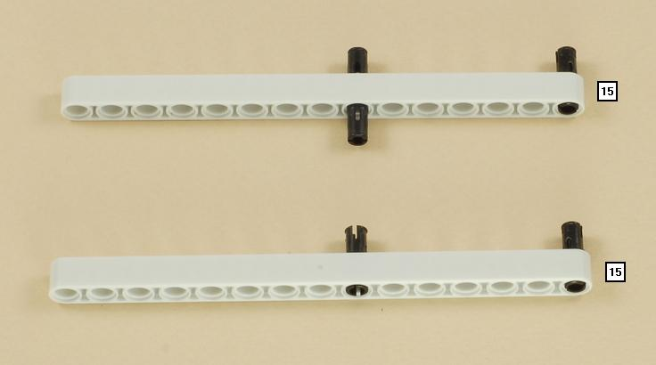
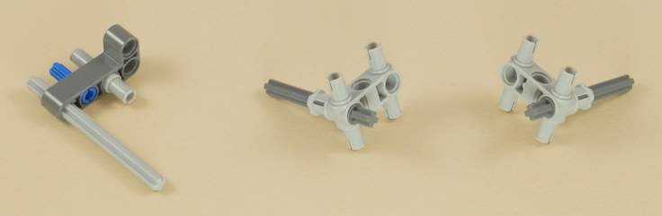
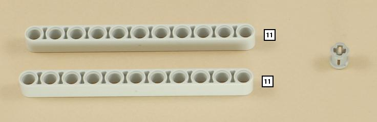
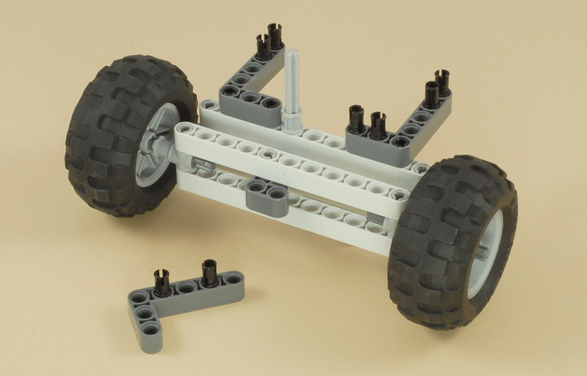
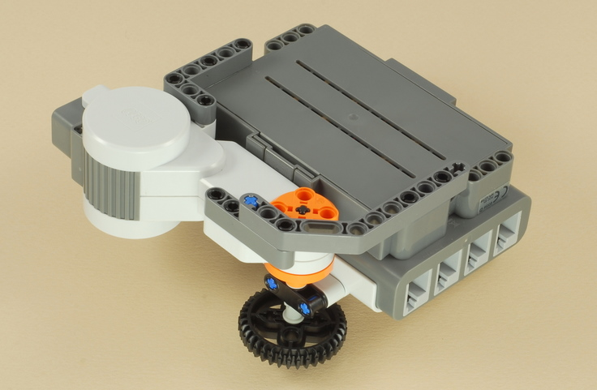

Fun Projects for your LEGO� MINDSTORMS� NXT!
|
|
Fun Projects for your LEGO� MINDSTORMS� NXT! |
| Steering Rover |
|

1

2
3
4

5

6
7

8
9
10
11

12
13
| Use the medium length wire to attach the touch sensor
to port 1 on the NXT. Then use the long wire to attach the rear wheel motor on the vehicle to port C on the NXT. Finally, attach the long wire from the steering motor on the vehicle directly to the steering wheel motor on the remote control. |
|
Steering Rover Programming The Steer_Power program will control the rover when it is wired as shown above (with the vehicle's steering motor connected directly to the steering wheel motor) and allow you to adjust the speed of the rover. The controls are:
Also, the much simpler program Steer_Rover does the same thing but without the speed control, if you just want to understand how the drive buttons work. Note that the Steer_Power and Steer_Rover programs don't do anything with the steering, because the "generator steering" here is handled by the direct motor/generator hookup of the two steering motors. The steering wheel motor generates electricity when you turn it by hand, and this electricity makes the steering motor on the vehicle turn in the same direction by about the same amount. As an alternative, you can wire the steering control through the NXT and have the NXT control the steering by program control using the Steer_Motor program. This makes the program much more complicated, but there are some advantages. Can you feel the difference in the way it steers? To use this program, you need to add a short (20 cm) wire and re-wire the steering motor as follows:
Alternate
steering wiring for the
Steer_Motor program: |
Challenges
|
|
Copyright
�
2007-2009 by Dave Parker. All rights reserved. |